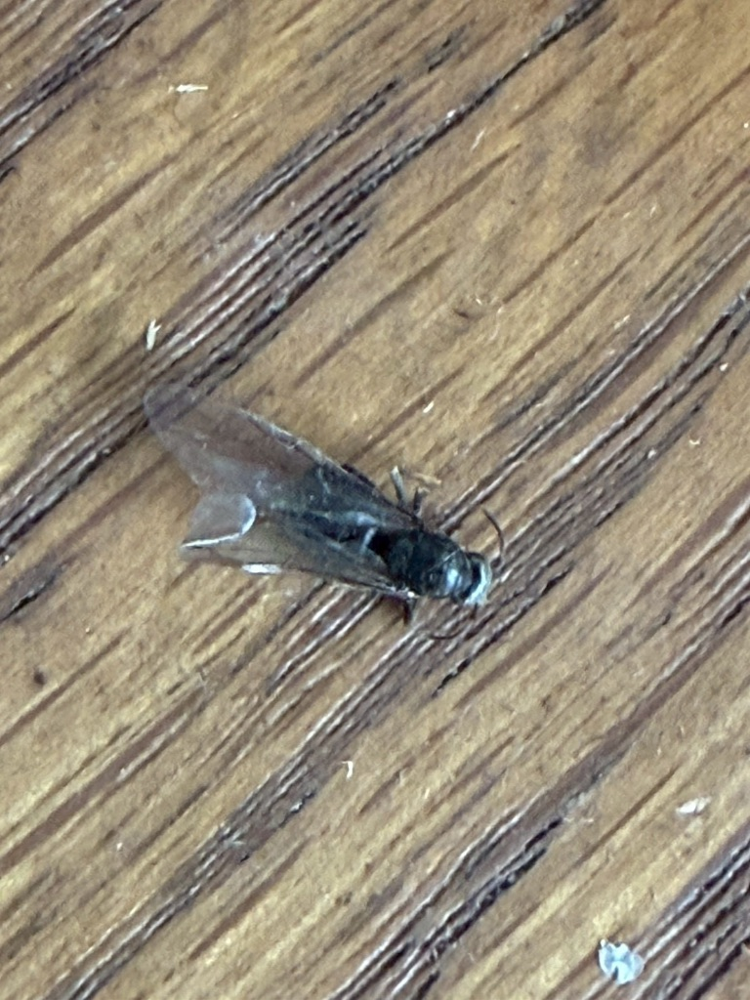

横浜市青葉区で羽アリ発見…柱がスカスカでした😱
Googleからお問合せ頂いた横浜市青葉区のお客様。雨染み調査のはずが、まさかの展開に…

※ この後本当にやばい状態でした…
今日はGoogleからお問合せ頂いた
横浜市青葉区のお客様のご自宅へ行って来ました。
サッシ周りの雨染みから雨漏りかな？の調査予定でしたが、、
😱 まさかの羽アリ発見
現場に到着して、
サッシ周りをチェックしていたら…
まさかの羽蟻が居て、、😱
これは予想外でした…
雨漏り調査のはずが、
シロアリ被害の可能性が浮上！

※ 羽アリ発見…
🔍 ボードを開けてみたら…
お客様に状況を説明して、
「ちょっとだけボードを開けて中を確認させてください」
とお願いしました。
そして、慎重にボードを開けてみると…
すでに柱がスカスカでした、、、
シロアリが柱を食い荒らしていて、
想像以上に深刻な状況でした…
シロアリから羽蟻にまで成長してしまった
ということは、
かなり長期間、被害が進行していたということ。
お客様も、
まさかここまで被害が進んでいるとは
思っていなかったようで、かなり驚かれていました。
💪 これからの対応
地震とか考えると、
住むを第一優先にすれば、
大きな工事になってしまいそう、、
でも、お客様の予算もありますし、
いきなり「全部やり替えましょう！」
とは言えません。
部分的に確認しながら、
なるべく費用を抑えられる対応を
心がけていきます。
一級建築士もいるので、
安全性を確保しながら、
お客様に最適なプランをご提案します✨
お客様も驚かれていましたが、
早期に見つかって良かったです！
これから詳しく調査して、
お客様に最適なプランをご提案していきますね✨